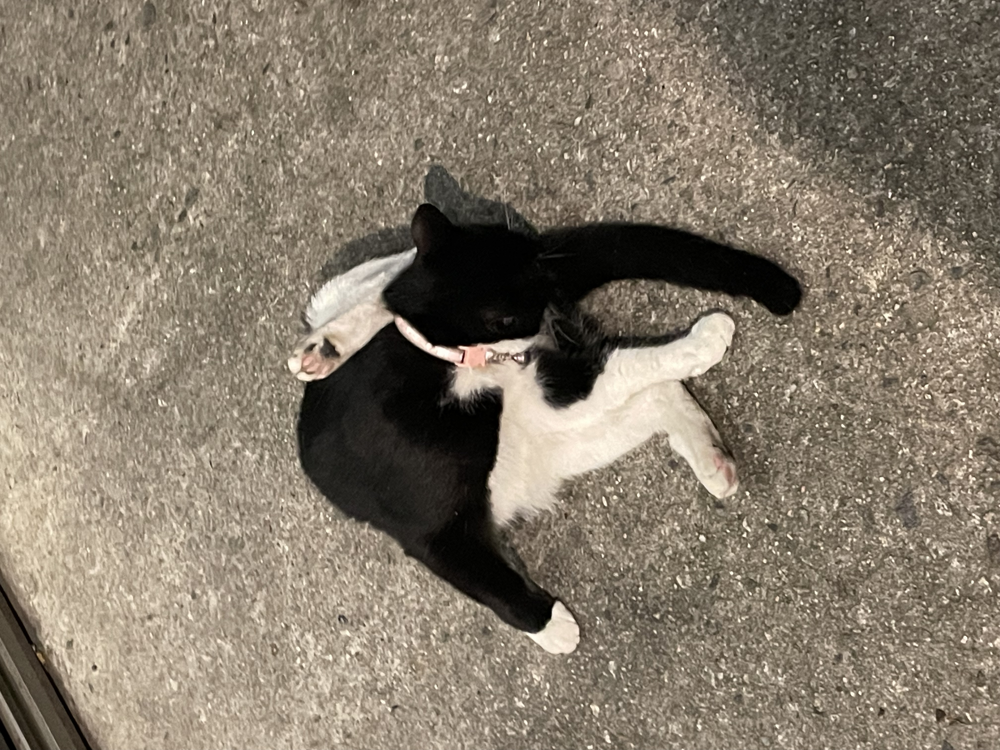

7월 13일
𓆜
오늘의 이동
집 → 재영이네 작업실 → 오징어세상 → 야식포차 → 집
710번, 163번
오늘의 카페
카페마 : 사과-딸기-시소 ☆☆★★★, 루바브 아이스티 ★★★★★
(용량은 작지만 귀여운 take-out컵에 줘서 기분이 좋다.)
오늘의 정말 소소한 위기
액자 앞면이 아직 안말랐다. 계획이 틀어졌다.
오징어회 먹었더니 서더리 매운탕이 안된대.
오늘의 소소한 행복
초벌이 잘 나왔다. 엄청 급하게 했는데 갈라지지도 않고 잘나왔다. 산백토가 짱이다.
재영이를 도와주는게 기뻤다.
재영이가 유약도 빌려주고 골라주기까지했다. 정말 빠르게.
오징어회 먹었다.
오늘의 진짜 행복
민경이가 재영과 나를 보러와줬다.
포차에 반질반질한 검은 고양이가 2마리나 있었다. 심지어 마음껏 만질 수 있었다.
오늘의 사진
야식포차 고양이

오늘의 노래
지윤해-김박사이야기